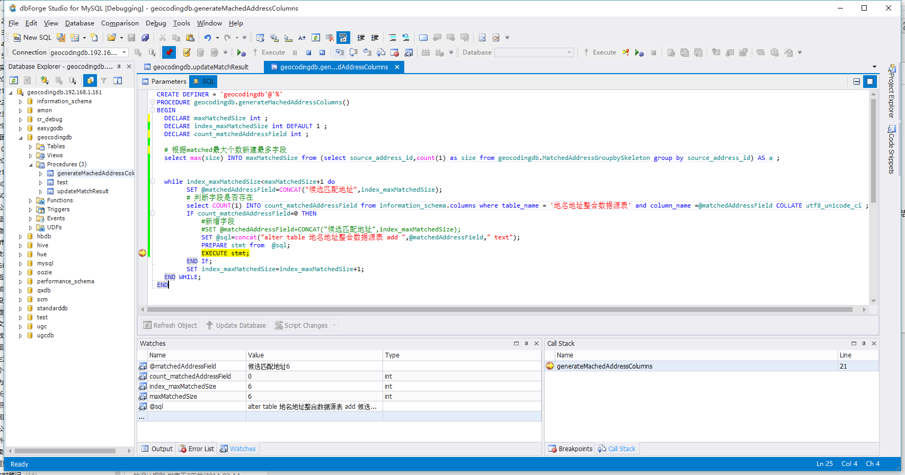

团队一直有小伙伴顶着数据库相关的工作，ETL数据整合分析事情多了，研发开发工作相应减少，终于有机会也来写写存储过程了。
以SP进行SQL业务逻辑封装，执行性能能大大提高，在注意合理拆分SP、SQL书写简洁规范和注释到位的情况下，也能做到易于维护。
特别是对于海量数据分析追求时效性的业务，效率第一，就算逻辑复杂不易维护也得认。如Hibernate VS Mybatis，产品 VS 项目，现实世界丰富多彩，存在即合理。
MySQL从V5.0开始支持存储过程，V5.0~V5.7版本之间自带的function有所差别，查资料的时候注意过滤，本文以MySQL5.5.4作为测试环境。
关于MySQL存储过程
MySQL 存储过程(Stored Procedure) 是通过给定的语法格式编写自定义的数据库API, 包含一系列sql语句的集合, 完成一个复杂的功能.
- MySQL5.5官方文档 存储过程
- 调试工具：dbForge Studio for MySQL Professional Edition

变量定义
mysql存储过程中，定义变量有两种方式：
会话变量
使用set或select直接赋值，变量名以 @ 开头，可以在一个会话的任何地方声明，作用域是整个会话，称为会话变量。
如:set @var=1;
存储过程变量
以 DECLARE 关键字声明的变量，只能在存储过程中使用，称为存储过程变量，主要用在存储过程中，或者是给存储传参数中。
如：DECLARE var1 INT DEFAULT 0;
两者的区别
- 在调用存储过程时，以DECLARE声明的变量都会被初始化为 NULL。
- 会话变量（即@开头的变量）则不会被再初始化，在一个会话内，只须初始化一次，之后在会话内都是对上一次计算的结果，就相当于在是这个会话内的全局变量。
- 在存储过程中，使用动态语句，预处理时，动态内容必须赋给一个会话变量。
注意事项
- 变量命名需与表字段不一致；
输出日志信息
SELECT concat(‘Comment:’,’—-Comment—-‘);
临时表
参考-MySQL临时表的简单用法
参考-internal-temporary-tables
临时表将在你连接MySQL期间存在。当连接断开时，MySQL将自动删除表并释放所用的空间。当然也可以在仍然连接的时候删除表并释放空间。1
2
3
4-- 新建
CREATE TEMPORARY TABLE IF NOT EXISTS sp_output_tmp ENGINE = MEMORY SELECT... from... where... ;
-- 删除
DROP TEMPORARY TABLE IF EXISTS sp_output_tmp;
游标嵌套循环（nested cursor loop）
参考/multiple-cursors-in-nested-loops-in-mysql
1 | BEGIN |
动态sql
PREPARE命令：PREPARE stmt_name FROM preparable_stmt
The PREPARE statement prepares a SQL statement and assigns it a name, stmt_name, by which to refer to the statement later. The prepared statement is executed with EXECUTE and released with DEALLOCATE PREPARE. For examples, see Section 13.5, “SQL Syntax for Prepared Statements”.
1 | SET @sql = "select * from table"; |
注意：The text must represent a single statement, not multiple statements.
批量更新
在sp中类似insert into (column1) values (value1)这样循环单条insert执行速度太慢，
可采用temporary table将数据先插入临时表；设置一个计数器，当临时表达到limit记录数时，关联更新目标表并重置临时表以释放资源。
问题记录
Json序列化函数JSON_Array不存在问题
问题描述：JSON_Array does not existed
解决：我用的V5.5，不支持,V5.7.8才支持;
As of MySQL 5.7.8, MySQL supports a native JSON data type that enables efficient access to data in JSON (JavaScript Object Notation) documents. The JSON data type provides these advantages over storing JSON-format strings in a string column:
嵌套Cusor问题
问题描述：子Cursor fetch的values总是父Cursor的第一个值，见gist存储过程记录
解决：View的问题，换成temporary table解决，见gist-batchUpdateMatchedAddress.sql
游标动态sql问题
问题描述：动态设置的条件与静态条件相比，少返回1条记录
原因：游标中查询条件不支持动态条件。
参考sql-syntax-prepared-statements
SQL syntax for prepared statements can be used within stored procedures, but not in stored functions or triggers. However, a cursor cannot be used for a dynamic statement that is prepared and executed with PREPARE and EXECUTE. The statement for a cursor is checked at cursor creation time, so the statement cannot be dynamic.
解决：参考dynamic-cursor-in-stored-procedure
- A cursor will only accept a select statement, so if the SQL really needs to be dynamic make the declare cursor part of the statement you are executing.
- 以View视图或Temporary Table临时表形式间接实现
新建视图时select中不能带有动态参数
原因： Within a stored program, the SELECT statement cannot refer to program parameters or local variables.
解决：View嵌套子查询，参考View’s SELECT contains a subquery in the FROM clause1
2
3
4
5
6
7
8
9
10
11
12
13
14create view view_clients_credit_usage as
select client_id, sum(credits_used) as credits_used
from credit_usage
group by client_id;
create view view_credit_status as
select
credit_orders.client_id,
sum(credit_orders.number_of_credits) as purchased,
ifnull(t1.credits_used,0) as used
from credit_orders
left outer join view_clients_credit_usage as t1 on t1.client_id = credit_orders.client_id
where credit_orders.payment_status='Paid'
group by credit_orders.client_id);